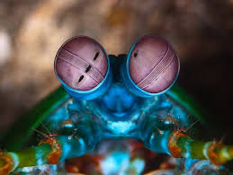
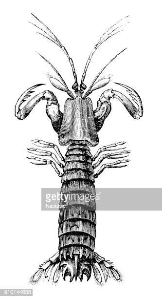
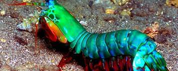

Fatos sobre o Stomatopoda
Me Diz Seu Nome
Odontodactylus scyllarus
| Reino: | Animalia | Filo: | Arthropoda | Subfilo: | Crustacea |
| Classe: | Malacostraca | Subclasse: | Hoplocarida | Ordem: | Stomatopoda |
Surper Visão
Esses animais possuem o mais complexo sistema de visão de cores do mundo animal. Com impressionantes 16 tipos de cone (sensores para percepção de cores) eles são capazes de ver cores que o nosso cérebro é incapaz de processar. A título de comparação nossos olhos possuem três tipos desses receptores - que correspondem à luz azul, verde e vermelha. Os cães contam com apenas dois tipos de cones (verde e azul), e é por isso que eles vêm tons de azul, verde e um pouco de amarelo. Muitos anfíbios, répteis, aves e insetos possuem quatro tipos de cones. A diferênça é colossal.Como cada cone pode ver cerca de 100 cores, os estomatópodes são capazes de ver 1024 cores, ou seja, 1 septilhão de cores. Em comparação, o olho humano vê 106 cores, ou seja, 1 milhão de cores apenas. A visão dos estomatópodes é sensível à luz ultravioleta, mas ainda é desconhecido se ela pode distinguir a luz infravermelha.
Super Soco - "One Punch Man dos Mares"
Stomatopodas possuem dois apendices na frente do corpo que aceleram a uma velocidade igual a de um rifle calibre 12 Essa força esmagadora (Soco a 80km/h) é a responsável pelo seu título de "lagosta-boxeadora" e é capaz de facilmente quebrar a carapaça de um caranguejo, as conchas duras e até mesmo quebrar o vidro reforçado de um aquário. A potência do golpe faz seus apêndices se moverem uma velocidade tão grande que ocorre o fenômeno da supercavitação. O fluido se expande a seu redor adquire uma velocidade muito grande, fazendo que sua pressão diminua drasticamente chegando ao ponto de evaporação do líquido, assim criando uma onda de choque. Quando a bolha criada pelo moviemnto implode produz uma temperatura assustadoramente alta e chega a emitir luz (Sonoluminescência).
Mais duro que Adamantium
Por não existirem outros casos de mecanismos animais que criem uma intensidade de força (nem mesmo os músculos/tendões em outras espécies), cientistas da Universidade Tecnológica de Nanyang, na Singapura, publicaram um estudo na revista científica iScience sobre funcionamento dos “punhos” do Camarão Mantis. Em entrevista para o site Science Daily, Ali Miserez (principal autor do estudo), conta que através de análises e testes, descobriram que essa estrutura é feita de duas camadas: a superior, constituída de biocerâmica (carbonato de cálcio amorfo) e a inferior, de biopolímero (proteínas e quitina). Quando flexionadas, a camada superior se comprime, enquanto a de baixo, se estica. Assim, constataram que esses crustáceos têm uma “estrutura elástica” que atua armazenando e liberando energia, de forma a ampliar a força e rapidez de seus movimentos. O cientista afirma que, neste caso, a natureza desenvolveu um design muito inteligente pois, caso a estrutura fosse feita de um material homogêneo, quebraria facilmente.
